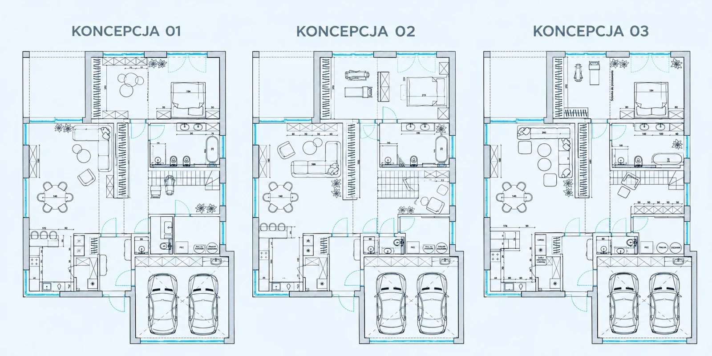

Tydzień albo dwa to za mało
Najczęściej wygląda to tak: deweloper daje na zgłoszenie zmian tydzień albo dwa. Wtedy dopiero klient szuka architekta, a my musimy ratować sytuację. Zdarza się nawet, że klient ma tylko dwa dni, bo przegapił termin. Można w tym czasie coś omawiać i wyrysować, ale nigdy nie będzie to dogłębnie przemyślane. Robimy to trochę naokoło, a czasem po omacku.
Najlepiej byłoby przyjść wcześniej, jeszcze zanim zbliży się termin. Wtedy możemy najpierw zrobić projekt wnętrza, a dopiero potem wprowadzić wszystkie zmiany idealnie pod gotowy projekt. Tak zmiany lokatorskie powinny wyglądać.
Tak wygląda układ z meblami, od którego zaczynamy: trzy koncepcje układu dla jednego domu. Dopiero na takim rzucie widać, czy gniazdko jest w dobrym miejscu i czy drzwi nie uderzają w szafę.

Jakie zmiany klienci wprowadzają najczęściej
Spektrum jest szerokie, od drobiazgów po przebudowę układu:
Dodatkowe gniazdka. Zwykle jest ich za mało, zwłaszcza w kuchni. W łazience warto pomyśleć np. o gniazdku do ładowania szczoteczki w szafce.
Przesunięcie lub dodanie punktów świetlnych. Deweloper robi tylko to, co absolutnie niezbędne. Jeśli coś ponad to, trzeba to doprojektować. A kiedy usuwamy ściankę albo gdzieś dobudowujemy, zwykle potrzebny jest też dodatkowy punkt świetlny.
Przesunięcie ścianek, najczęściej po to, żeby otworzyć zamkniętą kuchnię na salon.
Przeniesienie kaloryferów.
Dlaczego ścianki warto przesuwać właśnie teraz
Gdy przesuwasz ścianki później, po odbiorze, mogą wyjść różnice w sufitach. Wtedy robi się większy kłopot, bo trzeba wyrównywać cały sufit. Na etapie budowy tego problemu nie ma.
Kaloryfery i instalacje: lepiej razem z deweloperem
Zmiany w instalacjach, np. przesunięcie kaloryferów, lepiej zgłosić deweloperowi w ramach zmian lokatorskich. Wtedy wykonuje je on sam i nowy układ jest objęty jego odpowiedzialnością. Jeśli zrobisz to później na własną rękę, a w instalacji pojawi się usterka, trudno ustalić, czy to wada pierwotnego wykonania, czy skutek przeróbki, i deweloper może odmówić naprawy. Dokładne zasady zależą od umowy z deweloperem, więc warto je sprawdzić.
Co dokładnie dla Ciebie robimy
Wymiarujemy wszystkie ścianki i otwory drzwiowe. Jeśli jest taka możliwość, przesuwamy punkty wody i kanalizacji. Opracowujemy wszystkie zmiany w elektryce: dodatkowe gniazda i przesunięcia włączników światła. Z tego powstaje rysunek z wymiarami. Przekazujesz go deweloperowi sam i sam uzupełniasz jego tabelki, a my dajemy Ci gotowy, czytelny rysunek.
Drobiazgi, o których zawsze pamiętamy
Gniazdka po obu stronach łóżka. Fajnie, jeśli przy gniazdku obok łóżka można też wyłączyć górne oświetlenie. Pomaga w tym łącznik schodowy.
Światło w przedpokoju z włącznikiem przy wejściu i drugim na końcu korytarza, np. przy wejściu do salonu. Nie trzeba się cofać, żeby zgasić światło.
Oświetlenie wnętrza szafy, najlepiej z czujnikiem ruchu.
Zasilanie dla urządzeń w kuchni. Elektryczne otwieranie szuflad albo kosza pod zlewem, dodatkowa mikrofalówka czy winiarka potrzebują przyłącza. Jeśli o tym zapomnimy teraz, po odbiorze będzie to kucie w gotowej zabudowie.
Najczęstsze błędy, które widzimy
Za późno. To numer jeden.
Zmiany bez rozstawienia mebli. Dopiero na rzucie z meblami widać, czy gniazdko jest w dobrym miejscu i czy drzwi nie uderzają w szafę.
Zapomniane gniazdka.
Za małe przejścia. Klientom wydaje się, że to, co narysował deweloper, to rzeczywiste wymiary. Tymczasem deweloperzy często rysują meble w pomniejszonych wymiarach, żeby mieszkanie wyglądało na większe i bardziej pojemne, więc w rzeczywistości przejścia są mniejsze.
Kiedy warto zaprosić architekta
Zmiany lokatorskie można zrobić samemu, ale najwięcej dają wtedy, gdy powstają w ramach indywidualnego projektu. Każdy z nas inaczej użytkuje mieszkanie i każdy potrzebuje czegoś innego. Właśnie dlatego projekt jest indywidualny: nie jest „pod każdego”, tylko pod Ciebie.
Jedna rada na koniec
Jeśli deweloper daje Ci tydzień na zmiany, poproś o więcej czasu albo o zgodę na dostarczenie zmian później. Tydzień to zdecydowanie za mało.
Masz mieszkanie od dewelopera i termin zmian się zbliża? Napisz do nas, odpowiemy w ciągu 2 dni roboczych. Pierwsze spotkanie jest bezpłatne. Umów spotkanie.